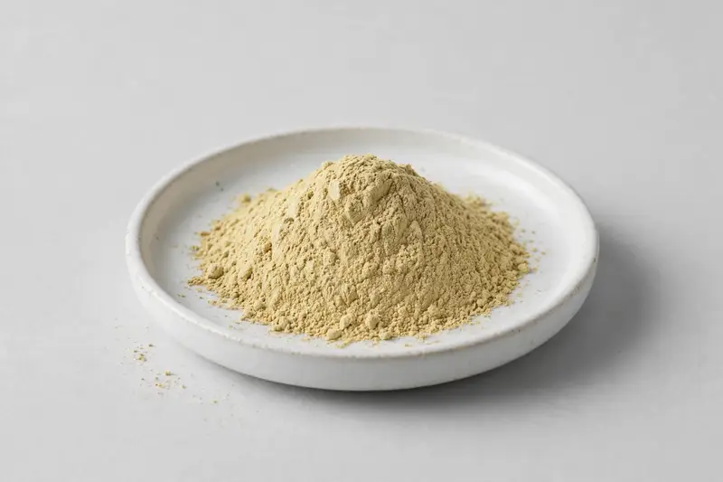

Bulk pineapple extract powder in bromelain-activity or spray-dried fruit grades for digestive-positioned and flavoring formulations.

Overview
Pineapple extract is derived from Ananas comosus fruit and is traded mainly in two directions: bromelain-activity standardized grades and spray-dried fruit powder grades. Supplement brands request it for digestive-positioned formats, while food and beverage buyers use spray-dried grades for flavor and nutrition. We source through partner producers from Xi'an and confirm feasibility once your target specification is received.
Specifications below reflect commonly requested options in the market — not a stock list. Share your target spec and we'll confirm exactly what we can supply, honestly.
| Specification | Details |
|---|---|
| Botanical identity | Pineapple fruit extract powder |
| Marker compound | Commonly requested spec grades: bromelain activity (e.g. 2000-3000 GDU/g) or spray-dried fruit powder; actual specs confirmed on inquiry |
| Appearance | Fine powder, color typical of the extract |
| Mesh size | Typically 80–100 mesh (confirm per inquiry) |
| Testing | COA/TDS arranged on request; scope agreed per your spec |
Applications
Documentation
We don't claim in-house labs or certifications we don't hold. COA and TDS documents can be arranged on request, and testing scope is agreed against your specification before supply.
FAQ
Related products
Silybum marianum
Key marker: Silymarin
View specs →Ginkgo biloba
Key marker: Flavone Glycosides
View specs →Panax ginseng
Key marker: Ginsenosides
View specs →Mangifera indica
Key marker: Mango Fruit Powder
View specs →squalane (from olive)
Key marker: Olive-Derived Squalane
View specs →Send your target spec and volumes — we'll respond with a tailored quotation.
Request a Quote